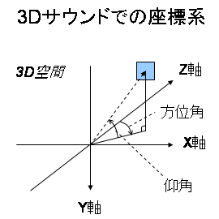

|
||||||||||
| 前のパッケージ 次のパッケージ | フレームあり フレームなし | |||||||||
参照:
説明
| インタフェースの概要 | |
| SoundPosition | 固定的な定位を指定するためのインタフェースを定義します。 |
| クラスの概要 | |
| CartesianListener | デカルト座標でリスナ(聴者)の位置と向きを指定するオブジェクトを定義します。 |
| CartesianPosition | デカルト座標でリスナ(聴者)と仮想音源の位置関係を指定するオブジェクトを定義します。 |
| PolarPosition | 極座標でリスナ(聴者)と仮想音源の位置関係を指定するオブジェクトを定義します。 |
| SoundMotion | 移動している定位を指定するためのオブジェクトを定義します。 |
3D サウンドの制御に使用するクラスを定義します。
このパッケージでは用語について以下のように定義して使用しています。
音が 3D 空間内のある位置から聴こえるようにエミュレートするには、 音を発する物体としての仮想音源と音を聴く主体としてのリスナを考えて、 リスナからみて仮想音源がどこにあるか、 すなわち、仮想音源とリスナとの位置関係を指定する必要があります。 ここでは、この「仮想音源とリスナとの位置関係」を定位と呼びます。
定位の指定は極座標系またはデカルト座標系で行うことができますが、
いずれも右手系で、右方向が X 軸の正の方向、下方向が Y 軸の正の方向、奥方向が Z 軸の正の方向となります。
また、極座標系での方位角は正面から時計回りに、仰角は正面から上回りに取ります。
すなわち、(仰角を0°とすると)方位角は 0° の時に Z 軸の正の方向、90° の時に X 軸の正の方向、-90° の時に X 軸の負の方向と重なります。
また、(方位角を0°とすると)仰角は 0° の時に Z 軸の正の方向、90°の時に Y 軸の負の方向、-90° の時に Y 軸の正の方向と重なります。

定位の指定の方法は、極座標系で指定する場合とデカルト座標系で指定する場合とで異なります。
PolarPosition
オブジェクトによって表されます。
この場合、リスナは常に座標原点に固定されており、
リスナから見た仮想音源の位置を極座標で指定することによって定位を指定します。
CartesianPosition
オブジェクトと
CartesianListener
オブジェクトの二つのオブジェクトによって表されます。
この場合、仮想音源とリスナの位置をそれぞれデカルト座標で指定しますが、
最終的にはそれらを元にリスナから見た仮想音源の位置が計算され、それによって定位が定まります。
リスナから見て仮想音源が静止しているものとして定位を指定する場合は、
一度だけ定位を指定すれば済みます。
SoundPosition
インターフェースを実装したクラスのオブジェクトを直接定位の指定に使用した場合は、
静止している定位の指定となります。
一方、リスナから見て仮想音源が移動しているものとして定位を指定する場合は、
現在の定位から何秒後にどのような定位となるか、というように時間情報と合わせて定位を指定しなければなりません。
SoundMotion
クラスのオブジェクトを定位の指定に使用した場合は、
移動している定位の指定となります。
なお、仮想音源は「カレントの定位」を持ちます。 したがって、静止している定位の指定を行った場合は、その定位がカレントの定位となります。 移動している定位の指定を行った場合は、カレントの定位を開始点として、 指定された時間の後に指定された定位にくるように定位の移動が行われ、 移動が完了したらその時点での定位がカレントの定位となります。
移動している定位の指定について、 仮に現在(時刻 t1)の定位をA、 移動後(時刻 t2)の定位をB、 移動にかかる時間を t = t2 - t1 とします。 すなわち、定位Aがカレントの定位であり、t秒後に定位Bにくるように移動させたいとします。 一つの仮想音源の移動に注目すると、極座標系の場合とデカルト座標系の場合とでそれぞれ次のようになります。
なお、一つの SoundMotion オブジェクトの中で極座標での定位指定とデカルト座標での定位指定を混在して使用することはできませんが、 一つの仮想音源に対しては極座標での定位指定とデカルト座標での定位指定を混在して使用しても構いません。
極座標系でもデカルト座標系でも、仮想音源やリスナの座標は float 型で指定しますが、
単位としては 1.0f が 1m を表すものとして処理が行われます。
すなわち、例えばデカルト座標系で仮想音源の座標が(0.0f, 0.0f, 1.0f)、リスナの座標が(0.0f, 0.0f, 0.0f)だとすると、
リスナの正面 1m のところに仮想音源があるように聴こえます。
なお、float 型で指定された座標は、実際には実装がサポートしている座標の粒度に丸めて設定されます。
実装がサポートしている最大の定位を超える定位が指定された場合は、
実装がサポートしている最大の定位に設定されます。
実装がサポートしている最小の定位よりも近い定位が指定された場合は、
実装がサポートしている最小の定位に設定されます。
また、仮想音源とリスナの座標として同じ座標を指定することもできますが、
その場合はリスナから見たときに頭の中に仮想音源があるような形で定位が設定されます。
|
||||||||||
| 前のパッケージ 次のパッケージ | フレームあり フレームなし | |||||||||
NTT DOCOMO,INC.
本製品または文書は著作権法により保護されており、その使用、複製、再頒布および逆コンパイルを制限するライセンスのもとにおいて頒布されます。NTTドコモ（その他に許諾者がある場合は当該許諾者も含めて）の書面による事前の許可なく、本製品および関連する文書のいかなる部分も、いかなる方法によっても複製することが禁じられます。フォントを含む第三者のソフトウェアは、著作権法により保護されており、その提供者からライセンスを受けているものです。
Sun、Sun Microsystems、Java、J2MEおよびJ2SEは、米国およびその他の国における米国 Sun Microsystems,Inc.の商標または登録商標です。サンのロゴマークは、米国 Sun Microsystems, Inc.の登録商標です。
FeliCaは、ソニー株式会社が開発した非接触ICカードの技術方式です。FeliCaは、ソニー株式会社の登録商標です。
「ｉモード」、「ｉアプリ／アイアプリ」、「ｉ-αppli」ロゴ、「DoJa」はNTTドコモの商標または登録商標です。
その他記載された会社名、製品名などは該当する各社の商標または登録商標です。